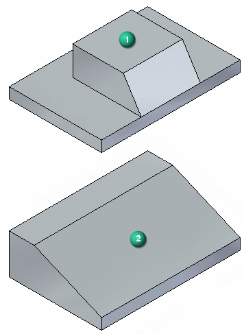
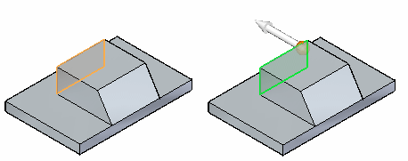
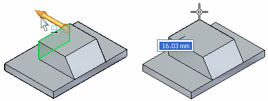
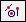
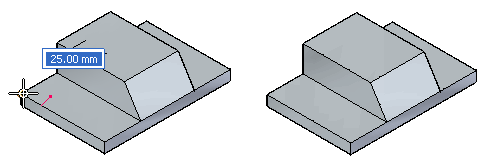
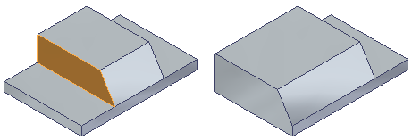
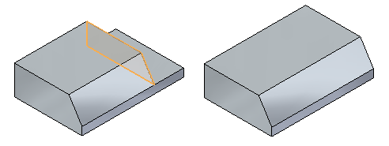
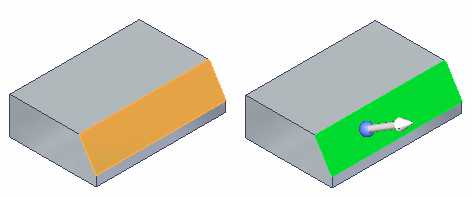
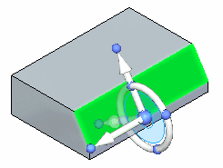
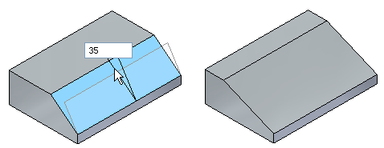

Activity: Moving and rotating faces
In this activity, you change the shape of a part (1) to a modified part (2) using a move and a rotate face process. This reinforces the use of the 3D steering wheel.
Click here to download the activity file.

If you are using Internet Explorer and a video is not displaying in your training guide, click the Tools tab (or gear icon)→Compatibility View settings, and then clear the selection of Display intranet sites in Compatibility View.
Open move_01.par.
Move the back face of the boss a distance defined by a vertex on the back face of the lower base.
Select the face shown. Use QuickPick if necessary.

Click the axis to start the Move command. Clicking the axis defines the direction vector for the move. All you need to complete the move is a distance to move.
The selected face connects to the cursor and moves dynamically as the cursor moves.

Use a keypoint locate to define the move to distance. On the Move command bar, choose the All keypoints option

.Move the cursor over the corner shown and click when the endpoint appears.

Press the Escape key to end the Move command.
Move the side faces on the boss a distance defined by a vertex on the side face of the lower base.


Select the angled face.

To rotate the selected face, define a rotation axis. Drag the steering wheel origin to the edge shown. The normal axis must lie on an edge that the face rotates about.

Click the steering wheel torus to start the rotation. As the cursor moves, the rotation angle tracks with the cursor. Type 35 in the Dynamic Edit box to define the rotation angle.

Press the Escape key to end the command.
This ends the activity. Exit the file and do not save.
In this activity you learned how to move and rotate faces. You define distances to move by dragging and clicking, typing in a distance, or by using keypoints. To rotate a face, position the normal axis of the steering wheel on an edge to rotate about. Click the torus and move the cursor to define the rotation angle or type a rotation angle in the Dynamic Edit box.
Click the Close button in the upper-right corner of the activity window.